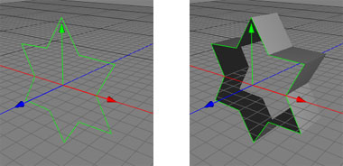

Extrude Object
The extrude object offers a quick and versatile way of transforming a spline into a solid polygon object, as in the images below.

Usage
To use the extrude creator object, you just have to drag and drop a spline object into a single extrude object, then determine how large you want the extrude by changing the X-direction, Y-direction and Z-direction parameters. You can then optionally set some additional parameters which determines how the extrude operation will operate, such as specifying a cover. For some splines that do not have a clockwise winding, you may need to chose to Flip Normals, since the extruded polygons will be facing inwards instead of outwards (which may or may not be what you intended).

Making 3D text is very easy with the Extrude object. Simply create a Text object with the text you'd like, create an Extrude Object, and drop the text object inside of it. Instantly, you'll get 3D text.

Properties
- Sections: Determines how many subsections to use when creating the extruded polygons.
- X-direction: The X offset amount by which the spline should be extruded.
- Y-direction: The Y offset amount by which the spline should be extruded.
- Z-direction: The Z offset amount by which the spline should be extruded.
- Flip normals: When off (by default), clockwise-winding splines result in the extruded polygons to be outward-facing. Tick this to flip the normals so that they face inwards instead.
- Cover: Determines if the extruded spline will be hollow, or will incorporate a covered front, back, or both.
- Radius: The radius of the bevel.
- Miter limit: The miter limit determines when an corner of an polygon will be capped while beveling. The higher the miter limit the sharper corners will be allowed. See the table below.
 |
|
|
miter limit=1.5
|
miter limit=3.0
|
- type: Determines the bevel type at the edges of the extrude. See table below.
|
|
 |
|
 |
 |
|
none
|
linear
|
convex
|
concave
|
stair
|